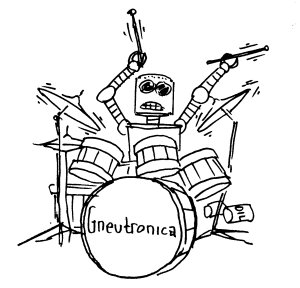
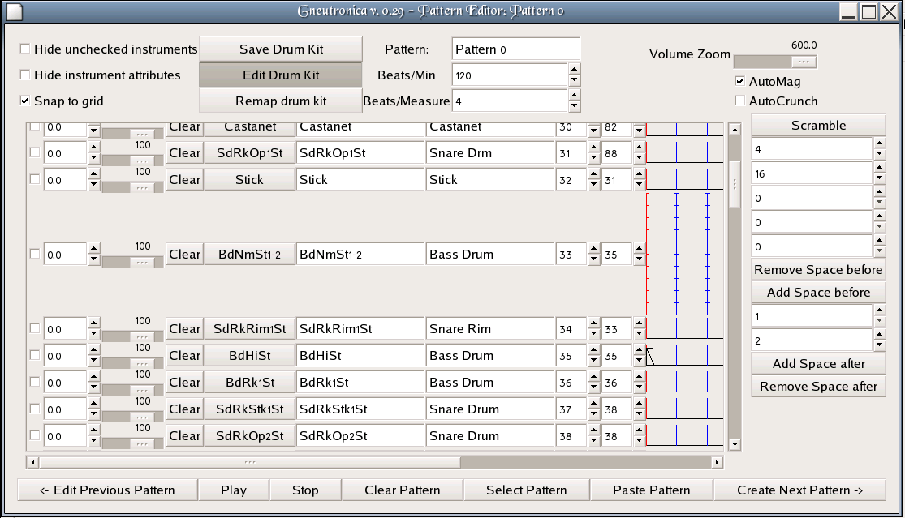
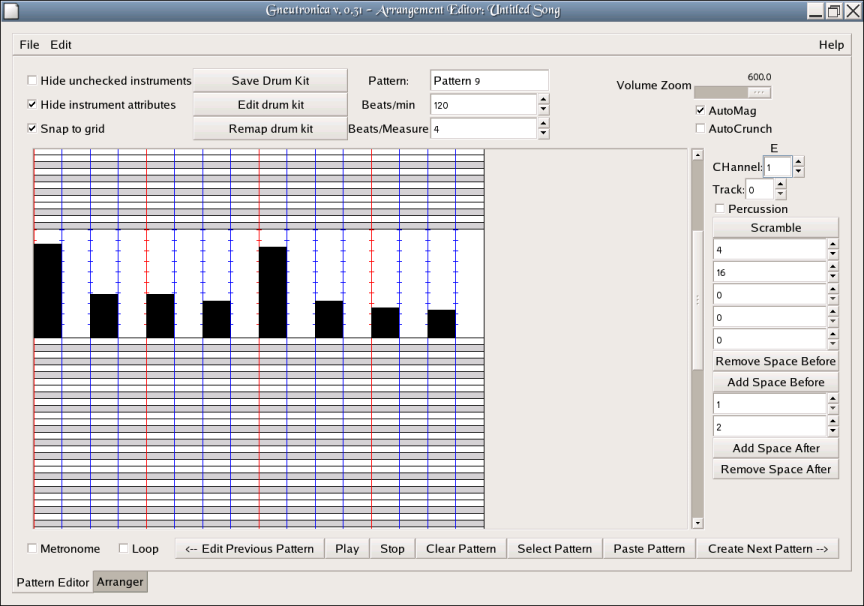
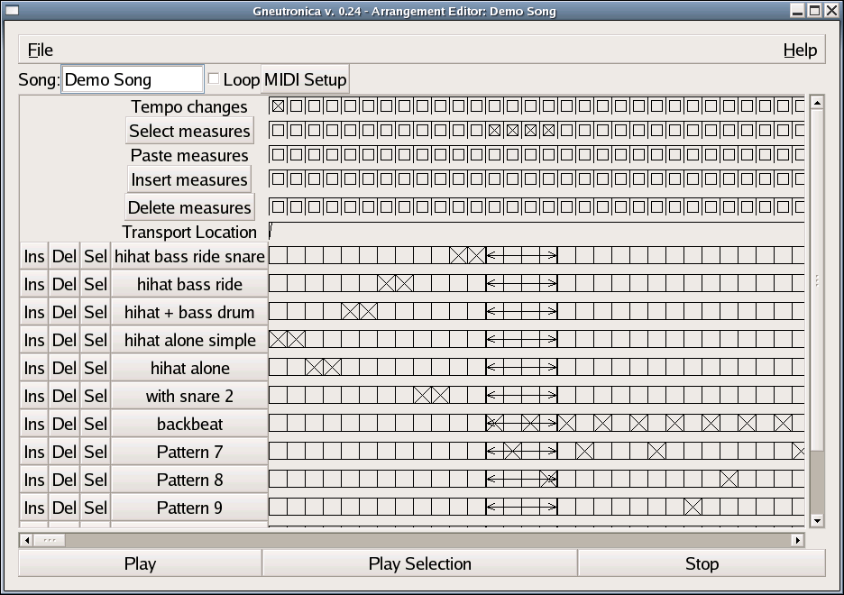
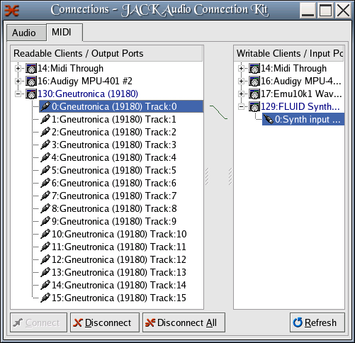

a MIDI drum machine for Linux

Last Updated Mar 02, 2008, by Stephen Cameron
Gneutronica is a simple MIDI drum machine and rudimentary sequencer program. If you are familiar with Hydrogen, you'll find yourself pretty much at home with Gneutronica. Gneutronica lets you create patterns of melody or drum beats one measure long, allows you to divide up each measure into however many beats you like (several times simultaneously, if you want) and then arrange those patterns into a sequence for playback. Essentially it's a tool with which to create drum tracks and instrument tracks and play them back via MIDI devices.
About a year ago (July 4, 2005), Gneutronica was quite small, less than 3000 lines of code. Now, nearly a year later, it's about 9000 lines or so. It's a bit bigger, but still not too huge. It doesn't try to do everything, and there are probably some strange things about the user interface which are due to my lack of knowledge about Gnome programming. Gneutronica is my very first Gnome program ever, and it's been probably 8 or 10 years since the last time I did any sort of X-windows programming at all. My knowledge of MIDI is also rather sketchy. That could be viewed as good news for anyone looking for a project to learn gnome or MIDI programming with. This program is still small and easy to understand.
Having said all that, I think it may have reached the stage of actually being useful, and it's pretty easy to use, so I thought I'd throw it out there in case anyone else might be wishing Hydrogen could talk to MIDI devices, or that it had a gnome interface. These two perceived shortcomings of Hydrogen, (at least I considered them to be shortcomings,) plus a desire to learn gnome and MIDI programming are what led me to create Gneutronica. (By now, the shortcoming of Hydrogen which I was complaining about may well have been rectified, for all I know.)
Really easy, has not been "autoconfiscated" or anything, just type make.
You will need the ALSA library), which can be found here: http://alsa-project.org/, as Gneutronica uses the ALSA sequencer interface.
[scameron@zuul gneutronica]$ make gcc -g -c `pkg-config --cflags gtk+-2.0` old_fileformats.c cc -g -c -o sched.o sched.c cc -g -c -o midi_file.o midi_file.c gcc -g -c fractions.c gcc -g -c drumtab.c cc -g -c -o midi_reader.o midi_reader.c gcc -g -c midioutput_raw.c gcc -g -c midioutput_alsa.c gcc -g -o gneutronica -I/usr/include/libgnomecanvas-2.0 -lasound \ old_fileformats.o sched.o \ midi_reader.o midi_file.o fractions.o drumtab.o \ midioutput_raw.o midioutput_alsa.o \ gneutronica.c `pkg-config --cflags --libs gtk+-2.0` \ chmod +x ./make_manpage ./make_manpage > documentation/gneutronica.1 [scameron@zuul gneutronica]$
If you want Gneutronica to be built with for the French language, edit the make file and uncomment the GNEUTRONICA_LANGUAGE= line for French. (The translations aren't very good, they are done by machine.)
Change:
GNEUTRONICA_LANGUAGE= # GNEUTRONICA_LANGUAGE=-DGNEUTRONICA_FRENCHto
# GNEUTRONICA_LANGUAGE= GNEUTRONICA_LANGUAGE=-DGNEUTRONICA_FRENCHfor French language support.
And running it . . .
[scameron@zuul gneutronica]$ ./gneutronica -d "hw" -i /dev/snd/midiC2D0 -k generic.dk pid = 0 Player waiting for requests parent, pid =5153 Using drumkit: Generic Generic Generic
The first thing you need to do to get started with Gneutronica is to get your MIDI device hooked up to your computer and able to make sound. I'm going to assume you've gotten that far. I have tried Gneutronica with a Yamaha Motif Rack, connected by USB, and a Kurzweil PC88, and a Roland (BOSS) Dr. Rhythm 660 drum machine, the latter two connected via USB through an M-audio (or Midiman) MidiSport 2x2 USB to MIDI converter. (Getting the Midisport to work with Fedora core 3 and 4 wasn't too bad, the worst part was getting the necessary firmware image.) Many machines assume MIDI channel 9 (or 10?) for percussion presets. For the machines I've tried (excepting one Roland keyboard) you could just set the machine to a percussion preset via its front panel controls, and then you were at least able to make some sound via the MIDI interface which corresponded to the front panel settings. Gneutronica does not currently try to send any MIDI program change messages by default, so setting things up from the front panel of the device is currently necessary. (However, there is a "Midi Setup" button with the ability to send bank and patch change messages, but it's not yet well tested, so I'm not completely sure it's all working right. Eventually it should work.)
Gneutronica will also work with softsynths (e.g: fluidsynth). Use acconnect or JACK to connect Gneutronica's midi outputs to your MIDI devices or softsynths.
Once you have your device connected and fired up, you need to start Gneutronica. By default, it will open the ALSA sequencer and create 16 sequencer ports (You can think of those as "tracks" within Gneutronica). This can be changed by the "-d" parameter. When first firing it up you may also wish to tell it to use an alternate drum specification file with the -k option. There is a General MIDI standard one which may be useful if you select a GM percussion compatible preset on your machine. If not, you may wish to use generic.dk, by specifying "-k drumkits/generic.dk" on the command line when starting the program. This drumkit lets you send to all 127 notes without trying to guess the names. Doing this, you can create your own drum specification file, which follows a simple format, a bunch of strings of characters, seperated by commas. The first line is used to identify the file format, in case it changes in the future. The second line contains the manufacturer, make and model, and subsequent lines specify instrments, with a pair of names, the MIDI note number, and the closest General MIDI note number for that instrument (for remapping purposes). The first name will appear in buttons in Gneutronica, and the second in tooltip windows. So the first name should be short enough to fit in a button, and the 2nd may be longer.
Gneutronica drumkit file format 1 Manufacture, Model, drumkit name Instrument 1, description of instrument 1, 1 1 Instrument 2, description of instrument 2, 2 2
However, that is the hard way, as now there is a drumkit editor. Just click the "Edit Drum Kit" button on the pattern window, and you should see something like this:

This will allow you to play the instruments by hitting the instrument button, hear it, and then type in the instrument name, type, MIDI note number, and approximate GM MIDI note without having to think too hard abuot it.
BTW, if you make a new drumkit file for a new device, or a new preset on a device send it to me, (stephenmcameron@gmail.com) and I'll include it in the next release.
When you first start up Gneutronica, you are presented with the Pattern Editor window. In a second tab near the bottom left, is the Arrangement Editor. The pattern editor lets you construct a pattern of drum beats one measure long, and the arrangement editor lets you arrange those one-measure-long patterns into a sequence.
Here is the pattern editor:
The grid in the center is where the pattern is constructed. Time runs along the horizontal axis, and the instruments are on the vertical axis, along the left hand side. The vertical lines divide the measure into time intervals, and control where notes may be placed. There are five sets of such lines, but by default, only two are active, the red lines, and the blue lines. The red lines divide the measure into quarters, and the blue lines divide the measure into 16ths. The divisions are controllable by the numbers in the "spin-boxes" on the right hand side of the screen. A value of zero or one essentially makes a set of lines inactive. A value of 2 divides the measure in half into 2 equal sized pieces, a value of 3 divides it into 3rds, 4 into 4ths, 5 into 5ths, etc. You can divide the measure all the way down to mincemeat, that is, to 300ths. Whether or not your MIDI device and Gneutronica can actually perform a very dense measure successfully is another question though. And you can divide it 5 times independently to set up polyrhythms like 3 against 4, or even go all Chopin with something crazy like 13 against 17 or some even bigger prime number
You set up a pattern by clicking in the central grid. For example, if you wanted to create a simple backbeat with bass drum on beats 1 and 3 and snare on 2 and 4, you'd find a bass drum you like, and click next to it on the very left hand edge of the central grid (beat 1) and on the middle red line (beat 3) and click next to the snare drum on the 1st and 3rd red lines (beats 3 and 4). Easy. You can listen to your pattern by pressing the "play" button. Clicking on the instrument buttons plays the instrument, but does not change the pattern. Some instruments (whistles) require a MIDI "note-off" message before they will ever quit making sound. The "Stop" button is useful if you hit one of those. Right now Gneutronica generally doesn't send "note-off" messages. (Yeah, that's a bug.)
Controlling the volume of notes: There are several ways of controlling the volume of notes placed in the grid. When using the left mouse button to place notes, the height above the line for each instrument controls the volume. So if you click very close to the horizontal line for an instrument, the note will be very quiet, and the further above the line you click, the louder the note will be. Changing the volume of already placed notes is as easy as clicking on the note a little bit higher, or lower to raise or lower the volume for that note. Since MIDI note volume (velocity, more precisely) has a range of 0-127, this method of setting the volume, though while quite convenient, is not as precise as one might one, since the area of pixels in which you click the mouse is only about 30 pixels high, you don't get the full 0-127 values, but only a down-sampled 30 values. There is a "Volume Zoom" feature which allows you to expand the height of the area for the current instrument by a preset amount. Using this, you get the same convenience of single-click placement of notes in both time and velocity, and you get the needed precision, and as each instrument is automatically expanded and contracted as you place notes, you still get to see plenty of instruments onscreen at once. Explaining it is more difficult than using, if you just move the "Volume Zoom" slider around and watch the screen, and click on a few notes, you'll immediately see how it works.
To delete a note, click on it with the right or middle mouse buttons. You can also use the "Clear" button that's next to each instrument to delete all the notes for that instrument in that pattern. This button will only be visible if the "Hide Instrument Attributes" checkbox is not checked.
There is another way to control the volume of notes. There is a volume slider to the left of each instrument. This sets a default volume. Whenever you place a note on the grid by using the middle mouse button, this default volume will be used. If you wish to place a series of notes with a uniform volume, the way to do it is to set the volume with the slider, then place all the notes on the grid with the middle mouse button.
The "Beats per Minute" controls the tempo of single-pattern playback (but not the tempo of the pattern within a song, which is controllable measure by measure, and a pattern may appear in more than one measure). The "Beats per Measure" affects the pattern in both single-pattern playback and within the context of the song. It is essentially a way for you to tell Gneutronica how many beats you consider the pattern to contain, regardless of what notes are actually in the pattern, or how they are arranged.
the "Next" and "previous" pattern buttons allow the pattern editor to travers the list of patterns you will create as you make a song. You can name your patterns by entering whatever text you like (but not single quotes) in the "Pattern" field. The "Hide unchecked instruments" box allows you to reduce the size of the list of instruments. Typically a pattern, or even a song will use just a few instruments, but the drumkits typically contain very many instruments, which can lead to a lot of superflous scrolling around. By checking the boxes next to the instruments you are actually using, and checking the "Hide unchecked instruments" box, you can reduce this scrolling.
Some additional features are available if the "Hide Instrument Attributes" checkbox is not checked. In that case, there will be a "spinbox" at the extreme left hand side of each instrument row in the pattern window. This controls "drag" or "rushing" of an instrument. You set the percentage of a beat you wish the instrument to "drag" behind the "correct" time. If you use a negative number, you get negative drag, or, rushing, the instrument will play "too soon," compared to correct time.
Next to the drag control is the default volume control, a simple slider which sets the default volume for notes. (See more above about setting the volume of notes.) After the default volume control is a button to clear all the notes of that instrument from a pattern.
The Remap Drum Kit button is useful only if you have loaded a song from a file which was originallly created with a different drumkit. This button causes the instruments in the pattern to be remapped using General MIDI mappings as a common denominator. This will sometimes give a decent approximation, but is unlikely to be a completely satisfactory mapping. It's a good way to get a first approximation of a remapping which can then be tweaked by hand.
There are now some hotkeys. 'q' quits gneutronica and saves your file in /tmp/zzz.gdt.
Additionally there are some hotkeys meant to help with swapping out instruments. Suppose you like a song, but want to swap out the snare drum sound for another. One way would be to edit the drumkit file and change the snare drum sound in there without changing any of your patterns. But you may not want to have song specific drumkits lying around.
These hotkeys are best used with automag turned on, and volume zoom set so you can see which is the "current" instrument easily.
There is also a rudimentary melodic sequencer in Gneutronica now:

Track: this controls which ALSA sequencer port Gneutronica will transmit this pattern to. Typically, you might have a bunch of drum patterns going out to say, a drum machine, you caould assign all those to Track 0, and use aconnect, or JACK to connect this sequencer port to the appropriate MIDI device or softsynth (your drum machine.) Then you might have, say, a bass part, and wish to sound that to a different sound module or softsynth, so you set those bass patterns to track 1, and again, use aconnect or JACK to assign that sequencer port to the appropriate device or softsynth.
Channel:If you have separate parts, say, a bass part, and a drum part, you may wish to send both parts to the same device or softsynth, but to different instruments on that device. Typically this is done with MIDI channels, on the device or softsynth, you arrange one instrument to receive on on channel, and another instrument to receive on another channel. Then you arrange your patterns in Gneutronica to transmit on the appropriate channel.
Here is the arranger window:

The idea is you have all your patterns lined up in a column on the left, and a grid representing what measures are played in what sequence on the right. Each column in the grid represents one measure, and you click in the square next to each pattern which is to be played in any given measure. You can toggle multiple measures by clicking and dragging across several measures with the left mouse button.
Notice that you can have more than one pattern playing in a given measure. For example if I wanted to add a ride cymbal to a sequence of patterns in the 2nd half of the song, I could make a pattern called "ride" which would contain only the ride cymbal. Then I could superimpose this pattern over my previous backbeat patterns by just clicking boxes in the Arrangement editor. Of course you don't have to do things this way, you could just as easily copied all the patterns to new patterns and modified each pattern to add ride cymbal to it. And in fact this is even easier than it sounds, as in the pattern window the "Paste" button really superimposes a selected pattern onto the pattern currently being edited, so you could create a pattern with only ride cymbal, then create new patterns by copying old patterns and then using the paste button to superimpose the ride cymbal pattern into those new patterns. There are lots of different ways of working.
The "Tempo changes" buttons above each measure allow you to set changes in tempo at measure boundaries.. When pressed, a window pops up that lets you specify a new tempo in beats per minute which takes effect at the beginning of the measure corresponding to the button you pressed, and which remains in effect until the next tempo change you specify. There is always at least one tempo "change" at the beginning of the first measure, specifyhing the initial tempo. Tempo changes can also be deleted if you change your mind, by using the same buttons.
The "Select measures" button will select all measures, or unselect all measures if any are already selected. Additionally, clicking on the buttons to the right of the "Select" button will select individual measures. Or, if you click on one of those buttons, then drag to another button before releasing, you can select multiple measures. You can also use the right mouse button and click and drag in the measures boxes (beside the pattern name buttons) to select multiple measures.
The "Delete measures" button will delete selected measures. Or, selecting the individual buttons to the right of the "Delete" button will delete single measures.
The "Insert measures" button will insert blank measures for however many measures are currently selected directly before the selection. The individual buttons to the right will insert single blank measures.
The "Paste" buttons will insert copies of whatever measures are currently selected.
The "Sel" button will select the pattern it's to which it is adjacent, this selection is later used by the "Paste" button in the pattern editor window.
The "Ins" pattern button inserts a new blank pattern jsut above the pattern to which it's adjacent.
The "Del" button will delete the pattern to which it's adjacent, and remove any instances of this pattern in any measures in which it occurs.
The buttons which contain the pattern names will cause the pattern editor window to jump to that pattern, which is convenient for navigating (rather than pressing "Next Pattern" or "Previous Pattern" pattern buttons repeatedly to scroll through them all.
Under the File menu in the arranger window, you will find the following options:
Under the Edit menu, there is one item, Remap drum kit for whole song via GM. If you start gneutronica with one drum kit, and load a song that was saved with a different drum kit, there is the possibility to use General MIDI mappings to try to reassign the instruments to appropriate roles for the drumkit in use. This menu item causes gneutronica to attempt such a mapping for every pattern in the song.
This is one of the coolest new features I've added in a while. There are a couple of selections in the "File" menu which will allow you to import aSCII drum tabs from a file, which is pretty straightforward.
You can also select drum tabs with the mouse, then paste them into the arranger window with the middle mouse button.
If you hear a "Cuica" (whatever that is) during playback, that's the instrument that Gneutronica uses when it can't figure out what it should use. For instance, you can paste this in, and for the question mark instruments, you'll hear the Cuica, which sounds a little bit like someone saying "huh?". That's just so you can know that Gneutronica couldn't figure out what to do, so you can teach Gneutronica about this unknown instrument, or, fix your tab file if it's just using some notation which gneutronica doesn't grok.
Some sample drum tab you can try pasting.
Hh|x-------x-------|x-------x-------|x-------x-------|x-------x-------| hc|--x-x-x---x-x-x-|--x---x---x---x-|--x-x-x---x-x-x-|--x---x---x---x-| sd|----x-------x---|----x-------x---|----x-------x---|----x-------x---| bd|x-------x-------|x-------x-x-----|x-------x-------|x-------x-x-----| C |x---------------|----------------|x---------------|----------------| Hh|x-------x-------|x-------x-------| r |--x-x-x---x-x-x-|--x-x-x---x-x-x-| sd|----x-------x---|---xx-------x---| bd|x-------x-------|x-x-----x-------| ? |x---------------|x---------------|
Sometimes it may be necessary to edit the tab file a little bit to get gneutronica to understand it (some complicated things, it may never be able to get.) Lot of times, stray vertical bar characters, or extra spacing inside the measures and so on can throw it off. Lots of times the file will just go right in, but when it doesn't, more often than not, a few moments editing the file in vi will make it usable.
In addition to pasting with the middle mouse button, there is a "Paste" menu item. The difference is that the middle mouse button pastes whatever is in the current selection, and the menu item pastes whatever has been copied to the clipboard. The "current selection" is more transient than the clipboard selection. (See X Selections, Cut Buffers, and Kill Rings. by Jamie Zawinski for a thorough explanation of the difference. It boils down to the idea that X has two different ways to copy and paste.)
The Scramble button randomly scrambles the current pattern. It is intended to be used as an aid in composition. The scrambling uses the first time division spin box, and divides the measure into that many equal sized chunks, and then shuffles the chunks. Sometimes dividing a measure up into 4 equal size chunks and then scrambling those chunks can give interesting results.
When adding space, set the numerator and denominator to indicate what fraction of the total measure after the operation you want the added space to consume.
For example, if you have a measure 2 units long, and want to make it instead 3 units long by adding some space onto the end, set the numerator and denominator to 1 and 3, or 1/3. In other words, after the space is added, the new space will occupy 1/3 of the total length of the measure.
These buttons remvoe a fraction of the measure from the beginning or end. If you want to cut off the first quarter of a measure, set the numerator/denominator to 1/4, then press "Remove space before." If you want to cut off the last 1/3rd of a measure, set the numerator/denominator to 1/3 and press "Remove space after." When removing space, the fraction used is the fraction of the measure before the operation, which is different than what's done for adding space.
Splitting patterns
Suppose you want to split a pattern into two equal sized patterns.
Joining patterns
Suppose you want to join two patterns into a single pattern.
|
Note -- this section is mostly obsolete, unless you fiddle
with gneutronica.c and make "midi = midi_raw;" instead of
"midi = midi_alsa;". But, you wouldn't do that. Ignore
this section, and instead just use aconnect or JACK to
connect Gneutronica's ALSA output MIDI ports to your
MIDI devices or softsynths, like this:
 |
[scameron@zuul ~]$ fluidsynth fluidsynth: ALSA driver: Using format s16, rw, interleaved fluidsynth version 1.0.6 Copyright (C) 2000-2002 Peter Hanappe and others. FLUID Synth comes with ABSOLUTELY NO WARRANTY. This is free software, and you are welcome to redistribute it under certain conditions; see the COPYING file for details. SoundFont(R) is a registered trademark of E-mu Systems, Inc. Type 'help' to get information on the shell commands. > load /home/scameron/soundfonts/tr808.sf2 fluidsynth: warning: Failed to pin the sample data to RAM; swapping is possible.loaded SoundFont has ID 1 >
[root@zuul ~]# modprobe snd_virmidi [root@zuul ~]# amidi -l Device Name hw:0,0 Audigy MPU-401 (UART) hw:0,1 Audigy MPU-401 #2 hw:0,2 Emu10k1 Synth MIDI (16 subdevices) hw:0,3 Emu10k1 Synth MIDI (16 subdevices) hw:1,0,0 MOTIF-R MIDI 1 hw:1,0,1 MOTIF-R MIDI 2 hw:1,0,2 MOTIF-R MIDI 3 hw:1,0,3 MOTIF-R MIDI 4 hw:1,0,4 MOTIF-R MIDI 5 hw:1,0,5 MOTIF-R MIDI 6 hw:1,0,6 MOTIF-R MIDI 7 hw:1,0,7 MOTIF-R MIDI 8 hw:2,0 Virtual Raw MIDI (16 subdevices) hw:2,1 Virtual Raw MIDI (16 subdevices) hw:2,2 Virtual Raw MIDI (16 subdevices) hw:2,3 Virtual Raw MIDI (16 subdevices)The lines beginning with "hw:2..." are my virtual midi devices, and the '2' means it's the 3rd device (0 and 1 are the 1st and 2nd). This matches the 2 in /dev/snd/midiC2D0
[scameron@zuul tr808]$ aconnect -lo
client 64: 'Audigy MPU-401 (UART)' [type=kernel]
0 'Audigy MPU-401 (UART)'
32 'Audigy MPU-401 #2'
client 65: 'Emu10k1 WaveTable' [type=kernel]
0 'Emu10k1 Port 0 '
1 'Emu10k1 Port 1 '
2 'Emu10k1 Port 2 '
3 'Emu10k1 Port 3 '
client 72: 'MOTIF-R' [type=kernel]
0 'MOTIF-R MIDI 1 '
1 'MOTIF-R MIDI 2 '
2 'MOTIF-R MIDI 3 '
3 'MOTIF-R MIDI 4 '
4 'MOTIF-R MIDI 5 '
5 'MOTIF-R MIDI 6 '
6 'MOTIF-R MIDI 7 '
7 'MOTIF-R MIDI 8 '
client 80: 'Virtual Raw MIDI 2-0' [type=kernel]
0 'VirMIDI 2-0 '
client 81: 'Virtual Raw MIDI 2-1' [type=kernel]
0 'VirMIDI 2-1 '
client 82: 'Virtual Raw MIDI 2-2' [type=kernel]
0 'VirMIDI 2-2 '
client 83: 'Virtual Raw MIDI 2-3' [type=kernel]
0 'VirMIDI 2-3 '
client 128: 'FLUID Synth (17540)' [type=user]
0 'Synth input port (17540:0)'
[scameron@zuul tr808]$
Note the last entry, "client 128" which is "FLUID Synth,"
my running softsynth.
[root@zuul ~]# aconnect 80:0 128:0
[root@zuul ~]# aconnect -lo
client 64: 'Audigy MPU-401 (UART)' [type=kernel]
0 'Audigy MPU-401 (UART)'
32 'Audigy MPU-401 #2'
client 65: 'Emu10k1 WaveTable' [type=kernel]
0 'Emu10k1 Port 0 '
1 'Emu10k1 Port 1 '
2 'Emu10k1 Port 2 '
3 'Emu10k1 Port 3 '
client 72: 'MOTIF-R' [type=kernel]
0 'MOTIF-R MIDI 1 '
1 'MOTIF-R MIDI 2 '
2 'MOTIF-R MIDI 3 '
3 'MOTIF-R MIDI 4 '
4 'MOTIF-R MIDI 5 '
5 'MOTIF-R MIDI 6 '
6 'MOTIF-R MIDI 7 '
7 'MOTIF-R MIDI 8 '
client 80: 'Virtual Raw MIDI 2-0' [type=kernel]
0 'VirMIDI 2-0 '
Connecting To: 128:0
client 81: 'Virtual Raw MIDI 2-1' [type=kernel]
0 'VirMIDI 2-1 '
client 82: 'Virtual Raw MIDI 2-2' [type=kernel]
0 'VirMIDI 2-2 '
client 83: 'Virtual Raw MIDI 2-3' [type=kernel]
0 'VirMIDI 2-3 '
client 128: 'FLUID Synth (17540)' [type=user]
0 'Synth input port (17540:0)'
Connected From: 80:0
[root@zuul ~]#
clients 80,81,82,and 83 are the virtual midi devices and correspond
to /dev/snd/midiC2D0, /dev/snd/midiC2D1, /dev/snd/midiC2D2,
and /dev/snd/midiC2D3, respectively. The idea is you connect
one of these nodes up to the input of the fluid synth, then
let gneutronica send to this node, and it will get routed to
the softsynth.
[scameron@zuul ~]$ gneutronica -d /dev/snd/midiC2D0Now, gneutronica should be driving the softsynth, just use it as you normally would.
Use the Metronome and Loop check boxes in the Pattern window in conjunction with the record button to tap in patterns with your MIDI input device. The first set of time division lines also controls the Metronome. (Note: If the '-i' option is not used to specify an input device, the "Record" button will not be present.)
Some things Gneutronica doesn't do
BUGS: You betcha. It uses and abuses fscanf() for one thing... For another, it doesn't generally send any "Note off" messages during normal playback.
Some notes about v. 0.27
This version changes the file format of both the drumkit files and the song files slightly. The program should still read the old files, however the GM remapping of instruments won't work right.
First, you should upgrade your drumkit files. If you've used the standard ones that came with gneutronica, then 0.27 comes with new versions of these drumkit files. If you have your own custom drumkit files you should start gneutronica then "edit drumkit" and put in values for the General MIDI values for each instrument, then save the drumkit.
To get your old song files be saved in the new format, you should start gneutronica with the -k option to specify whichever drumkit file you used for a song. You should use the new version of the drumkit file which contains the General MIDI mappings. Then open the song and then save it. This will save it with the new GM mappings, which will enable you to remap the song to use another drumkit if you need to at some point.